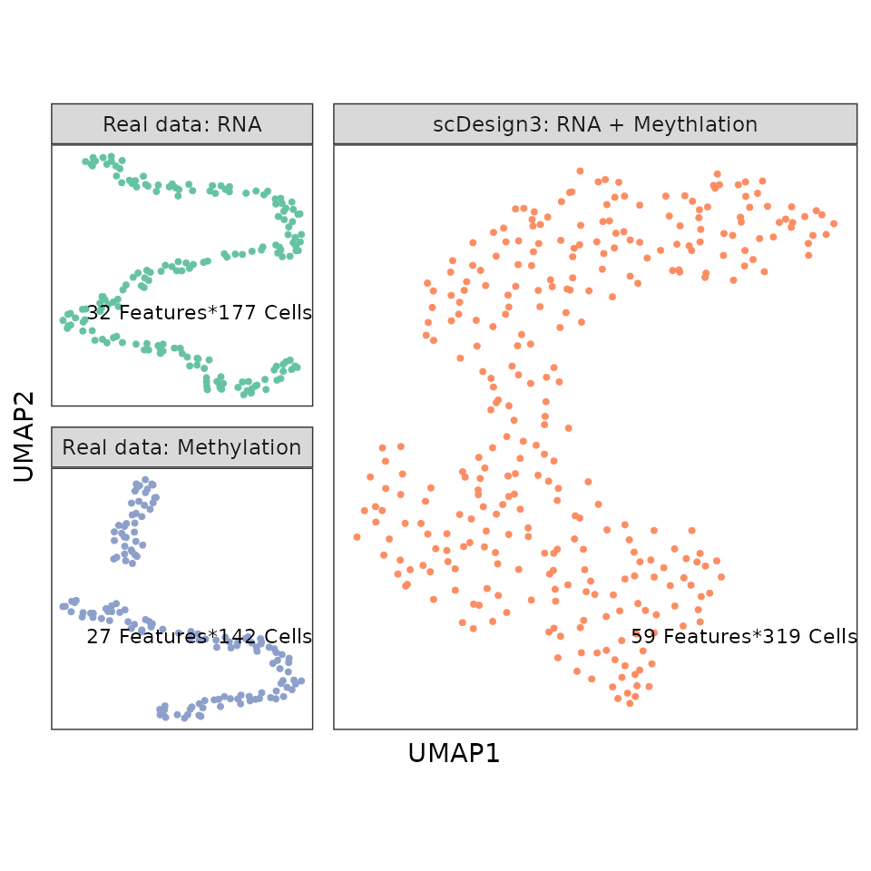

Simulate multi-omics data from single-omic data
Dongyuan Song
Bioinformatics IDP, University of California, Los Angelesdongyuansong@ucla.edu
Qingyang Wang
Department of Statistics, University of California, Los Angelesqw802@g.ucla.edu
27 March 2023
Source:../../scDesign3/code/vignettes/scDesign3-multiomics-vignette.Rmd
scDesign3-multiomics-vignette.Rmd
library(scDesign3)
library(SingleCellExperiment)
library(dplyr)
library(ggplot2)
library(ggh4x)
library(umap)
theme_set(theme_bw())Introduction
In this tutorial, we will show how to use scDesign3 to simulate multi-omics (RNA expression + DNA methylation) data by learning from real data that only have a single modality. The example data and aligned low-dimensional embeddings are from Pamona.
Read in the reference data
SCGEMMETH_sce <- readRDS((url("https://www.dropbox.com/sh/0tptrft7hsstpi3/AAAo-79sEfTkvrEig0q4L5Oia/SCGEMMETH_sce.rds?raw=1")))
SCGEMRNA_sce <-readRDS((url("https://www.dropbox.com/sh/0tptrft7hsstpi3/AADEKgmZG4FsW5tdbu1fdYKda/SCGEMRNA_sce.rds?raw=1")))
print(SCGEMMETH_sce)
print(SCGEMRNA_sce)We first combine the cell-level data from the scRNA-seq data and the DNA methylation data.
Simulation
We first use the step-by-step functions to fit genes’ marginal models, copulas, and extract simulation parameters separately for the scRNA-seq data and the DNA methylation data.
set.seed(123)
RNA_data <- scDesign3::construct_data(
SCGEMRNA_sce,
assay_use = "logcounts",
celltype = "cell_type",
pseudotime = NULL,
spatial = c("UMAP1_integrated", "UMAP2_integrated"),
other_covariates = NULL,
corr_by = c("UMAP1_integrated", "UMAP2_integrated")
)
METH_data <- scDesign3::construct_data(
SCGEMMETH_sce,
assay_use = "counts",
celltype = "cell_type",
pseudotime = NULL,
spatial = c("UMAP1_integrated", "UMAP2_integrated"),
other_covariates = NULL,
corr_by = c("UMAP1_integrated", "UMAP2_integrated"))Note here we actually treat the 2D aligned UMAPs as a kind of “pseudo”-spatial data. We use the tensor regression spline to fit two ref datasets seperately.
RNA_marginal <- scDesign3::fit_marginal(
data = RNA_data,
predictor = "gene",
mu_formula = "te(UMAP1_integrated, UMAP2_integrated, bs = 'cr', k = 10)",
sigma_formula = "te(UMAP1_integrated, UMAP2_integrated, bs = 'cr', k = 5)",
family_use = "gaussian",
n_cores = 2,
usebam = FALSE)
METH_marginal <- scDesign3::fit_marginal(
data = METH_data,
predictor = "gene",
mu_formula = "te(UMAP1_integrated, UMAP2_integrated, bs = 'cr', k = 10)",
sigma_formula = "1",
family_use = "binomial",
n_cores = 2,
usebam = FALSE)
RNA_copula <- scDesign3::fit_copula(
sce = SCGEMRNA_sce,
assay_use = "logcounts",
marginal_list = RNA_marginal,
family_use = "gaussian",
copula = "vine",
n_cores = 2,
new_covariate = NULL,
input_data = RNA_data$dat
)
METH_copula <- scDesign3::fit_copula(
sce = SCGEMMETH_sce,
assay_use = "counts",
marginal_list = METH_marginal,
family_use = "binomial",
copula = "vine",
n_cores = 2,
new_covariate = NULL,
input_data = METH_data$dat
)
RNA_para <- extract_para(
sce = SCGEMRNA_sce,
marginal_list = RNA_marginal,
n_cores = 2,
family_use = "gaussian",
new_covariate = NULL
)
METH_para <- extract_para(
sce = SCGEMMETH_sce,
marginal_list = METH_marginal,
n_cores = 2,
family_use = "binomial",
new_covariate = NULL
)Simulate New Datasets
Then, we combined the cell covariates from both the scRNA-seq data and the DNA methylation data as the new covariate to simulate the two new datasets with parameters from scRNA-seq data and the DNA methylation data separately.
RNA_res <- simu_new(
sce = SCGEMRNA_sce,
assay_use = "logcounts",
mean_mat = RNA_para$mean_mat,
sigma_mat = RNA_para$sigma_mat,
zero_mat = RNA_para$zero_mat,
quantile_mat = NULL,
copula_list = RNA_copula$copula_list,
n_cores = 2,
family_use = "gaussian",
input_data = RNA_data$dat,
new_covariate = rbind(RNA_data$dat, METH_data$dat),
important_feature = RNA_copula$important_feature
)
METH_res <- simu_new(
sce = SCGEMMETH_sce,
mean_mat = METH_para$mean_mat,
sigma_mat = METH_para$sigma_mat,
zero_mat = METH_para$zero_mat,
quantile_mat = NULL,
copula_list = METH_copula$copula_list,
n_cores = 2,
family_use = "binomial",
input_data = METH_data$dat,
new_covariate = rbind(RNA_data$dat, METH_data$dat),
important_feature = METH_copula$important_feature
)Visualization
We combine the two synthetic datasets and obtain the UMAP embeddings for the combined dataset.
count_combine <- rbind(RNA_res, METH_res)
count_combine_pca <- irlba::prcomp_irlba(t(count_combine), 5)
count_combine_umap <- umap::umap(count_combine_pca$x, n_neighbors=30, min_dist=0.7)$layout
colnames(count_combine_umap) <- c("UMAP1", "UMAP2")
SCGEMNEW_sce <- SingleCellExperiment::SingleCellExperiment(list(logcounts = count_combine))
reducedDims(SCGEMNEW_sce) <- list(PCA = count_combine_pca$x, UMAP = count_combine_umap)
SCGEMRNA_umap <- umap::umap(colData(SCGEMRNA_sce) %>% as_tibble() %>% dplyr::select(paste0("X", 1:5)), n_neighbors=30, min_dist=0.7)
SCGEMRNA_umap <- SCGEMRNA_umap$layout
colnames(SCGEMRNA_umap) <- c("UMAP1", "UMAP2")
reducedDim(SCGEMRNA_sce, "UMAP") <- SCGEMRNA_umap
SCGEMMETH_umap <- umap::umap(colData(SCGEMMETH_sce) %>% as_tibble() %>% dplyr::select(paste0("X", 1:5)), n_neighbors=30, min_dist=0.7)
SCGEMMETH_umap <- SCGEMMETH_umap$layout
colnames(SCGEMMETH_umap) <- c("UMAP1", "UMAP2")
reducedDim(SCGEMMETH_sce, "UMAP") <- SCGEMMETH_umap
dat_RNA <- SCGEMRNA_umap %>% as_tibble() %>% dplyr::mutate(Method = "Real data: RNA")
dat_METH <- SCGEMMETH_umap %>% as_tibble() %>% dplyr::mutate(Method = "Real data: Methylation")
dat_NEW <- reducedDim(SCGEMNEW_sce, "UMAP") %>% as_tibble() %>% dplyr::mutate(Method = "scDesign3: RNA + Meythlation")
SCGEM_dat <- bind_rows(list(dat_RNA, dat_METH, dat_NEW))Then, we reformat the UMAP embeddings for the inputted scRNA-seq data, DNA methylation data, and the combined synthetic data and visualize the UMAP embeddings.
design <- matrix(c(2,3,1,3), 2, 2) %>% t()
dat_text_SCGEM <- tibble(Method = c("Real data: RNA", "Real data: Methylation", "scDesign3: RNA + Meythlation"), label = c("32 Features*177 Cells", "27 Features*142 Cells", "59 Features*319 Cells")) %>% as.data.frame()
SCGEM_dat <- SCGEM_dat %>% dplyr::mutate(Method = factor(Method, levels = c("Real data: RNA", "scDesign3: RNA + Meythlation", "Real data: Methylation"))) %>% dplyr::mutate(UMAP1 = if_else(Method == "Real data: RNA", -UMAP1, UMAP1), UMAP2 = if_else(Method == "Real data: RNA", -UMAP2, UMAP2))
p_merge_modals <- ggplot(SCGEM_dat, aes(UMAP1, UMAP2, colour = Method)) + ggrastr::rasterize(geom_point(size = 0.5), dpi = 300) +
guides(colour = "none") + scale_color_brewer(palette = "Set2") + theme_bw() + theme(aspect.ratio = 1,
panel.grid.minor = element_blank(),
panel.grid.major = element_blank(),
axis.text.x=element_blank(),
axis.ticks.x=element_blank(),
axis.text.y=element_blank(),
axis.ticks.y=element_blank()) + facet_manual(~Method, design = design, widths = c(1, 2), heights = c(1, 1), respect = TRUE, scales = "free")+ geom_text(
data = dat_text_SCGEM,
mapping = aes(x = Inf, y = -Inf, label = label), vjust = -6, hjust = 1, color = "black", size = 3)
p_merge_modals